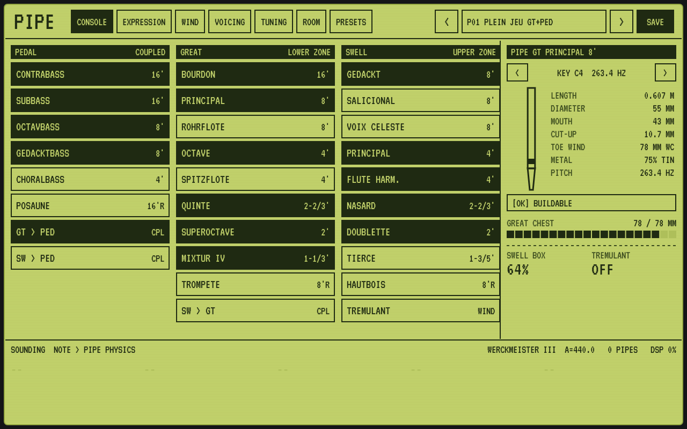
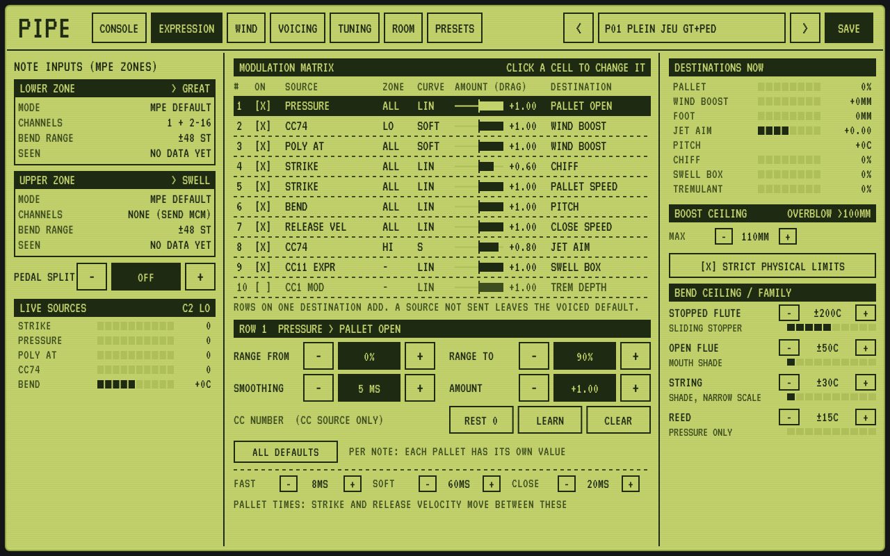
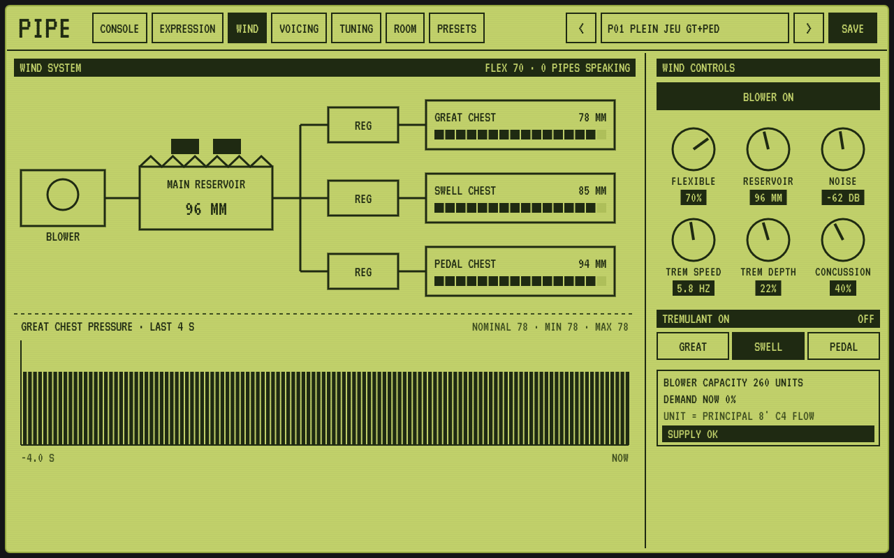
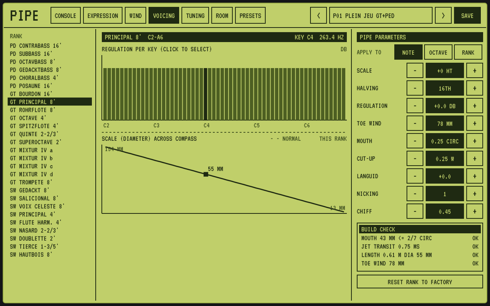
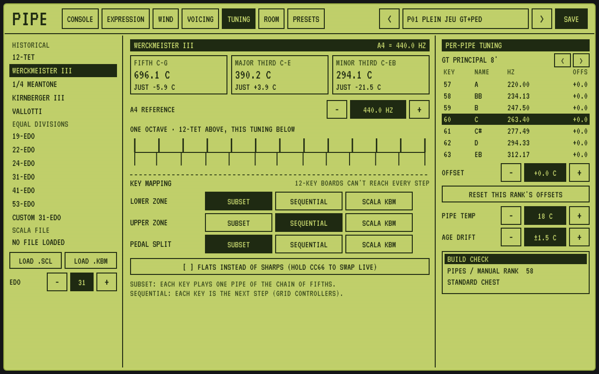
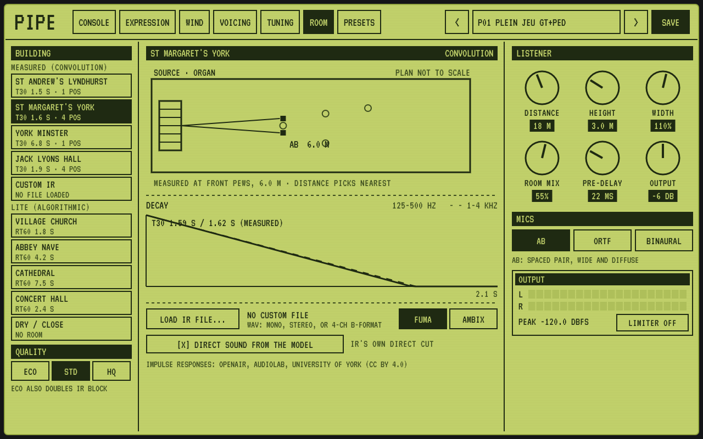
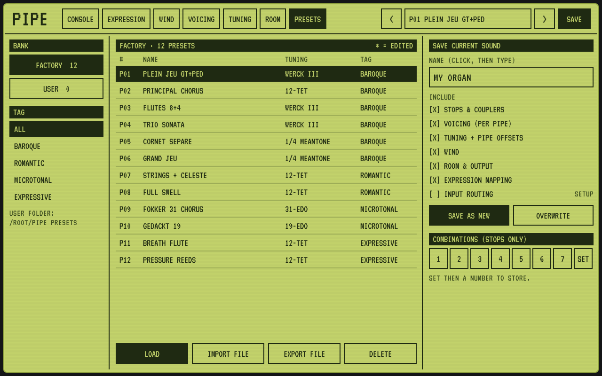

PIPE
Throughout this manual, words in THIS STYLE are labels you will see on Pipe's screen.
Most organ software plays back recordings. Someone records each pipe of a real organ, note by note, and the software replays those recordings when you press a key. Pipe works differently: it builds the organ. Every time you play a note, Pipe works out the sound of a real pipe, starting from the air.
Inside a flue pipe, a thin sheet of air (the jet) blows across a sharp lip and makes the air in the tube vibrate. In a reed pipe, a brass tongue beats against an opening. Pipe models that physics for every pipe in the instrument. It uses each pipe's real length, width and mouth, and the wind pressure feeding it at that moment.
Pipe works out each pipe's size from how it is voiced, then checks that a real organ builder could make it. The stoplist is a genuine three-division organ of 27 ranks, with sensible couplers, chests and wind.
A recording is the same every time. Pipe's pipes are calculated as you play, so the start of each note and its little breath of air vary naturally, as they do in a church. Notes can last forever without a loop point.
A blower fills a reservoir, which feeds each chest. Play a big chord and the wind sags a little, then recovers, exactly as on an old organ. You can make the wind steady and modern or flexible and historic.
Real organ keys are on or off. With a pressure-sensitive keyboard, Pipe lets you open each pipe's valve gradually, push extra wind into a single note, or bend its pitch. Every one of these uses a mechanism that could really exist.
Pipe has historical temperaments such as Werckmeister and meantone, and equal divisions such as 19 and 31 notes per octave. It also loads Scala files. Then you can retune any single pipe by hand, as a tuner on a ladder would.
Pipe places the organ in measured acoustics: York Minster, two English parish churches and a concert hall, recorded by the University of York. You can also load your own room recordings, or use light-weight “lite” rooms.
And because nothing is sampled, Pipe loads in a moment and needs no huge sample library. Most of the download is the recordings of the real buildings, not the organ.
Pipe is not a copy of any particular famous organ. It is an organ that could exist, voiced in a broadly North European style. You are free to revoice it into something else entirely.
| Computer | File | Copy it to |
|---|---|---|
| Windows | Pipe.vst3 | C:\Program Files\Common Files\VST3\ |
| Pipe.clap | C:\Program Files\Common Files\CLAP\ | |
| Mac | Pipe.vst3 | your Library › Audio › Plug-Ins › VST3 |
| Pipe.component (AU) | your Library › Audio › Plug-Ins › Components | |
| Pipe.clap | your Library › Audio › Plug-Ins › CLAP | |
| Linux | Pipe.vst3 / .clap / .lv2 | the hidden folders .vst3, .clap and .lv2 in your home folder |
xattr -dr com.apple.quarantine ~/Library/Audio/Plug-Ins/*/Pipe.*
Pipe has one window, styled like a backlit display, and seven screens. The strip along the top is always there:
Using the controls: click a button to switch it. Drag a knob up or down to turn it, or use your mouse wheel over it. The - and + buttons step a value. You can resize the window by dragging its corner, and every control can also be automated from your music program.
The Console is where you choose which sets of pipes sound. It's the equivalent of an organist pulling the stop knobs beside the keyboards.

A pipe organ is really several organs in one case, each with its own keyboard. Pipe has three:
| Division | Character | Played from |
|---|---|---|
| Great | The main, bold sound of the organ: principals, flutes, mixture and a trumpet. | The lower MPE zone (normally your whole keyboard) |
| Swell | Softer and more colourful: strings, flutes, a celeste and an oboe. Its pipes stand in a box with shutters that open and close, so it can get louder and softer. | The upper MPE zone |
| Pedal | Deep bass pipes, normally played by the feet. | A split point at the bottom of the keyboard, or the couplers |
Click a stop to switch it on (dark) or off (light). Each stop is one rank: one pipe for every key. The number on the right is its pitch, in the organ builder's measure of feet:
Stops change while you hold notes, exactly as on a real slider chest: draw a stop during a chord and those pipes start speaking.
Couplers join divisions together. SW > GT lets the Great keyboard play the Swell stops too. GT > PED and SW > PED add the manual stops to the pedal. The TREMULANT stop makes the wind waver gently, which suits solo flutes and strings.
On the right, Pipe shows one actual pipe: its length, diameter, mouth size and the wind at its foot. Use the arrows to step through the keys. The [OK] BUILDABLE line confirms it could be made. Below it you see the wind on the Great chest, how open the swell box is, and whether the tremulant is on. The bottom strip lists the notes and pipes currently sounding, with how much CPU Pipe is using.
Pipe never assumes which keyboard you have. It listens to what your keyboard actually sends and responds to it. Whatever you play, it should simply work.
Play as you would play an organ. How hard you strike a key changes how quickly the pipe's valve (the pallet) opens. A firm strike gives a crisper start, called chiff; a gentle one gives a softer start. Each pipe then sounds at its normal wind pressure. An expression pedal plugged into your keyboard (sending CC11) opens and closes the Swell box.
Keyboards that sense pressure under each finger let Pipe do things a church organ cannot, but always through parts that could really be built:
| Your gesture | What happens inside the organ |
|---|---|
| Strike | How fast the pallet valve opens: a sharper or softer start to the note. |
| Press down | The pallet opens part-way, so the pipe speaks softly, then fully. You can swell a single note from a whisper. |
| Press harder | Extra wind is pushed into that pipe, making it louder and brighter. Flue pipes jump up to their next note if pushed past their limit, as real pipes do. |
| Bend sideways | A sliding stopper or a shade at the pipe's mouth changes the pitch, but only as far as that kind of pipe allows. |
| Slide (forwards/back) | Depending on the setup, more wind or the aim of the air jet, from breathy to bright. |
| Release | How fast the valve closes. |
Put the Osmose in its MPE mode and choose its first MIDI port (called Port 1 on firmware 2.3 and later) in your music program. The Osmose's keys have two stages. Pipe's standard setup uses them like this:
These work the same way: pressure opens the valve, and the forward-back slide adds wind. Grid-style keyboards like the Exquis are especially good for the microtonal tunings (see chapter 8).
Notes play at full wind straight away, and pressing harder adds wind to each note separately.
Your music program gives Pipe a single stream of notes, so Pipe chooses the division by MPE zone. The lower zone plays the Great and the upper zone plays the Swell; you can change which division each zone plays on the Expression screen. Most MPE keyboards use the lower zone unless you set them up otherwise. To play the Pedal from the bottom of your keyboard, set a PEDAL SPLIT key on the Expression screen: notes below it go to the Pedal.
This screen decides what each movement of your hands does to the organ. You don't need to touch it to enjoy Pipe; the standard setup already suits most keyboards. Come here when you want to change the feel.

The two zone boxes show which division each zone plays (click the dark title to change it), which MIDI channels are in use, the bend range, and a SEEN line listing the kinds of data that have arrived. If something isn't responding, look here first: if PRES never appears, your keyboard isn't sending pressure. LIVE SOURCES shows the values of the last note you touched.
The matrix is a list of ten connections. Each row reads like a sentence: “this movement of my hand → moves this part of the organ”. Click any cell to change it:
| Column | What it means |
|---|---|
| ON | Switches the row on or off. |
| SOURCE | The movement: STRIKE, PRESSURE, POLY AT, CC74 (slide), BEND, RELEASE VEL, or any controller such as a mod wheel or pedal (CC). |
| ZONE | Only listen to the lower zone, the upper zone, or ALL. |
| CURVE | How the movement is shaped. LIN is even, SOFT reacts quickly at first, HARD saves its effect for the end, and S is gentle at both ends. |
| AMOUNT | How strongly, from −1 to +1. Drag up or down on the bar. A negative amount works backwards. |
| DESTINATION | The part of the organ that moves (see the list below). |
Destinations: PALLET OPEN (how open the valve is), WIND BOOST (extra wind), JET AIM, PITCH, CHIFF, PALLET SPEED, CLOSE SPEED, and three that affect the whole organ: SWELL BOX, TREM DEPTH and TREM SPEED.
Two rules make the matrix easy to live with: rows sending to the same place add together, and if your keyboard doesn't send a row's movement, that row simply leaves the organ as voiced.
Below the list are the finer settings for the highlighted row. RANGE FROM and RANGE TO choose which part of the movement is used. For example, 0–90% means the valve is fully open a little before the bottom of the key. SMOOTHING calms jittery movements. REST 0/REST MID says whether the control normally sits at zero or in the middle, as a pitch bend does. CLEAR empties the row, and ALL DEFAULTS restores the standard setup. The pallet times at the bottom set how fast the valves open on a hard or soft strike, and how fast they close.
DESTINATIONS NOW shows, for the last note, how open its valve is, how much extra wind it has, the wind at the pipe's foot, and so on. BOOST CEILING sets the most wind the boost can deliver; above about 100 mm flue pipes overblow to a higher note. BEND CEILING / FAMILY sets how far each kind of pipe may bend while strict limits are on.
Every organ is a giant wind instrument. This screen shows the air's journey from the blower to the pipes, and lets you decide how steady, or how alive, it is.

Wind pressure is measured as organ builders measure it, in millimetres of water (mm). Play a big chord with lots of stops and watch the Great's pressure dip in the graph: the blower can't keep up for a moment. That slight sag and recovery is part of what makes a real organ sound alive.
| Control | What it does |
|---|---|
| BLOWER ON | Switch the blower off and the organ slowly runs out of wind, just like a church organ when the power is cut. |
| FLEXIBLE | How much the wind gives under heavy chords. Low is rock-steady and modern; high is lively and historic. |
| RESERVOIR | The pressure stored in the main reservoir. |
| NOISE | The faint hum and rush of the blower. Turn it right down for a clean studio sound. |
| TREM SPEED / DEPTH | How fast and how deep the tremulant wavers. |
| CONCUSSION | Small bellows that smooth out sudden changes in the wind. |
| TREMULANT ON | Which division the tremulant affects: GREAT, SWELL or PEDAL. |
The box at the bottom right shows how hard the blower is working. If it reads anything other than SUPPLY OK, you are asking for more wind than the blower can give, as when every stop and coupler is drawn. That's normal and part of the character.
Voicing is the organ builder's art of shaping each pipe's tone and loudness. Here you can do the same, pipe by pipe, while Pipe checks that your pipe could still be built.

| Setting | In plain words |
|---|---|
| SCALE | The pipe's width. Wider pipes sound rounder and more fluty; narrower ones sound thinner and more string-like. |
| HALVING | How quickly pipes get narrower going up the keyboard, which changes the balance between bass and treble. |
| REGULATION | Loudness of this pipe, in decibels. |
| TOE WIND | The wind pressure at the pipe's foot. More wind gives a louder, brighter sound. |
| MOUTH / CUT-UP | The size and height of the pipe's mouth. A higher cut-up gives a darker, gentler sound. |
| LANGUID / NICKING | Fine details at the mouth that steer the air jet. They control how clean or breathy the pipe is and how it starts. |
| CHIFF | The little puff of air at the start of each note. |
The BUILD CHECK box tests your pipe against real-world limits, such as a mouth too wide for the pipe. Each line says OK or tells you what's wrong. The SCALE graph compares your rank's widths with a normal rank. If you get lost, RESET RANK TO FACTORY undoes your changes to the whole rank.
Organs have been tuned in many ways over the centuries. Pipe offers the classic historical tunings, unusual equal tunings with many notes per octave, your own Scala files, and fine tuning of every single pipe.

The three boxes at the top show how pure the main intervals are compared with natural (“just”) ones. A4 REFERENCE sets the pitch of A, for example 415 Hz for Baroque pitch. The ruler compares one octave of your tuning with modern tuning.
A normal keyboard has 12 keys per octave, but 31-EDO has 31 notes, so Pipe needs to know how to lay them out. You set this separately for each zone and the pedal:
On the right, pick a rank with the arrows and a key from the list, then use OFFSET to raise or lower that one pipe in cents (hundredths of a semitone). PIPE TEMP sets the temperature of the building: flue pipes go sharp as a church warms up, while reed pipes barely move, so a warm church puts the two slightly out of tune with each other, just as in real life. AGE DRIFT adds the small random mistuning of an organ that hasn't been tuned for a while. Set it to 0 for perfection.
An organ is never heard on its own. The building is part of the instrument. This screen places your organ in a real church or hall and decides where you are listening from.

Measured rooms are real places. Their echo was recorded by the University of York's OpenAIR project, and Pipe plays your organ through those recordings (a technique called convolution):
| Building | Character |
|---|---|
| St Andrew's, Lyndhurst | A Victorian parish church: warm, about 1.5 seconds of echo. |
| St Margaret's, York | A medieval church, now a concert venue: clear, about 1.6 seconds, measured from four seats. |
| York Minster | One of Europe's great cathedrals: a vast echo of around 6–7 seconds. |
| Jack Lyons Hall | A modern concert hall: about 2 seconds, measured from four seats. |
The lite rooms (village church, abbey nave, cathedral, concert hall) are imitations made by a simpler process. They sound convincing and use much less of your computer's power, which is useful on older laptops or with many tracks. DRY / CLOSE removes the room altogether.
When you switch to a measured room, the title briefly says PREPARING IR... and then the new room fades in.
AB is two microphones spaced apart: wide and spacious, a classic for organ recordings. ORTF is two angled microphones close together: a more focused image. BINAURAL is made for headphones and places you inside the building with a fixed head position.
Many rooms' acoustic “fingerprints” (impulse responses) are freely available online, including many more from OpenAIR. To use one:
Normally Pipe removes the recording's own first “bang” and uses its own direct sound of the organ instead, which keeps the organ clear. Untick DIRECT SOUND FROM THE MODEL to hear the recording exactly as it was made.
QUALITY (bottom left) sets how many pipes Pipe can sound at once: ECO 192, STD 320, HQ 448. ECO also lightens the room's processing.
Presets save a whole sound: stops, voicing, tuning, wind, room and expression, so you can come back to it later or share it.

Choose FACTORY or USER on the left, and narrow the list by style with the tags. Double-click a preset, or select it and press LOAD.
| Factory preset | What it is |
|---|---|
| P01 Plein Jeu GT+PED | The full principal chorus with mixture, with pedal. Bach's preludes and fugues. |
| P02 Principal Chorus | Principals at 8', 4' and 2' with the mixture and pedal, in modern tuning. |
| P03 Flutes 8+4 | Soft, gentle flutes for accompanying or quiet pieces. |
| P04 Trio Sonata | A principal on the Great against a bright flute combination on the Swell, with pedal, for trio playing. |
| P05 Cornet Séparé | A French Baroque solo colour built from flutes and mutations. |
| P06 Grand Jeu | French Baroque full organ with reeds, in meantone. |
| P07 Strings + Celeste | Shimmering Romantic strings; the celeste is tuned slightly sharp to make it beat. |
| P08 Full Swell | The Swell's full power; open and close the box with an expression pedal. |
| P09 Fokker 31 Chorus | A chorus in 31-EDO, after Fokker's organ. |
| P10 Gedackt 19 | A stopped flute in 19-EDO. |
| P11 Breath Flute | For pressure keyboards: the whole key travel opens the valve, and pressing further aims the air jet, like breath on a recorder. |
| P12 Pressure Reeds | For pressure keyboards: lean into notes to push wind into the reeds. |
Your presets are ordinary small files in a folder called Pipe Presets in your Documents folder. EXPORT FILE saves one anywhere, for example to share with a friend, and IMPORT FILE brings one in. Your music program also saves Pipe's full state with each project automatically.
Organists change stops quickly with combination buttons. Pipe has seven, which remember stops only. To store one, set up your stops, press SET, then a number. To recall it, just press the number, even while playing.
Check that at least one stop is drawn on the Console, that the blower is on (Wind screen), and that your music program is sending your keyboard to Pipe's track. If you play into the upper zone or below a pedal split, make sure that division has stops drawn. The Expression screen's SEEN lines show whether notes are arriving.
Look at SEEN on the Expression screen. If PRES, PAT or Y never appear, your keyboard isn't sending that data. Check that it is in MPE mode (or that aftertouch is turned on) and, on the Osmose, that you are using Port 1. If the data is arriving, check the matrix rows are switched on.
That's the valve following your pressure, which is what MPE pressure is set to do. If you would rather notes start at full wind, switch off row 1 (PRESSURE > PALLET OPEN) in the matrix.
Try ECO quality, or a lite room instead of a measured one. Fewer stops and couplers also help. Raising your music program's audio buffer size gives Pipe more time to work.
Check the tuning on the Tuning screen. Werckmeister III is the default and is intentionally not equal; choose 12-TET for modern tuning. Set AGE DRIFT to 0 and keep PIPE TEMP near 18 °C for the most precise result. Heavy chords may also sag the wind slightly; turn FLEXIBLE down for steadier pitch.
The file has probably moved. Load it again with LOAD IR FILE....
Very occasionally a download version of Pipe may be built without the measured rooms; it then uses the lite abbey instead. Download the latest version from the releases page.
Do the one-time Terminal step described in chapter 2, then restart your music program.